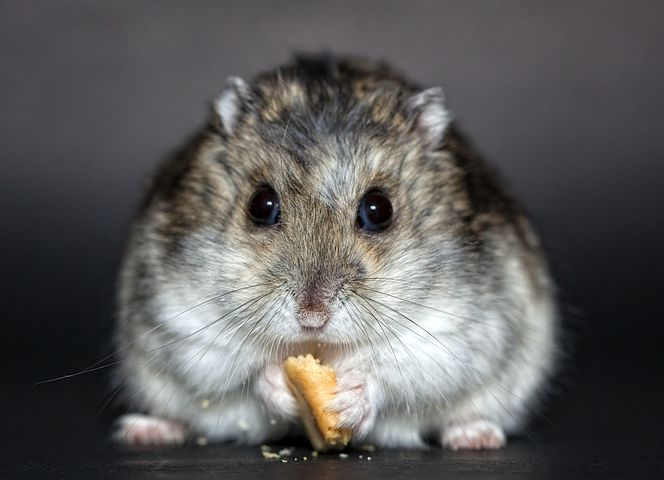

Aparece na Europa pela primeira vez no início do século 18 e no final deste mesmo século já tinha alcançado a América do Norte. O Rattus rattus é originário do sudeste da Ásia. Foram encontrados vestígios desta espécie datados do século V, durante o Império Romano.
Os ratos são portadores de mais de 35 doenças transmissíveis aos homens e animais domesticos. As mais comuns são
De um jeito não muito legal os ratos marcaram uma das pandemias mais famosas da historia da humanidade, eles foram um dos principais transmissores
da peste negra, que aflingiu grande parte da europa assim dando origem aos medicos da peste negra (medicos que usavam mascaras que lembravam corvos),
mas normalmente a doença chega até aos humanos através das pulgas.Isso acontece porque, após causar a morte ao rato, a pulga geralmente migra para
outros corpos para continuar se alimentando do sangue. Estimasse que a peste negra matou mais de 30% a 60% da população da Europa na época,
pode ter reduzido a população mundial de 475 milhões para 350–375 milhões no século XIV.
A História dos Roedores tem início há cerca de 70 milhões de anos atrás durante o período Cretáceo na América do Norte,
onde um animal semelhante a um esquilo ou a um musaranho, que vivia em árvores,pode ter sido o ancestral dos atuais roedores
e também dos primatas, os quais possuíam um certo grau de parentesco.

Os roedores entendem conceitos complexos e, uma vez que aprendem a fazer alguma coisa, é improvável que a esqueçam. Depois de entender como um rato é inteligente, você apreciará um pouco mais esses pequenos animais pelo que eles realmente são. Exsitem diversos videos no youtube que podem te mostrar que ratos são sim inteligentes e voçê pode passar horas vendo videos sobre
Video de um rato completando percurso em um labirinto rat mazeEu tenho um rato em casa o nome dele e Twitch (referencia ao champion do lol da rota adc) e um rato e um biixinho facil de criar é fofo muito legal para alguem que nunca teve um pet na vida ele e a opção ideal para iniciantes, eles são "baratos" na minha opnião um rato ou hamster custa uns 10 a 50 reais por ai, so que é claro que o custo da cazinha, ração, e coisas do tipo vão ser meio caras mas vale a pena confia em mim, se voçê for muito corajoso pode tentar construir uma cazinha voçê mesmo mas não recomendo eu ja tentei, e fico muito ruim, o unico ponto ruim de se ter um rato ou hamster e que eles vivem pouco tempo então se voçê ficar muito apegado a eles vai ser muito triste dizer adeus, eles em cerca de 3 a 4 anos só infelizmente, mas tirando essa parte e muito legal criar um hamster/rato vale a pena mesmo se voçê nunca teve um pet antes, confia em mim :)
Esse foi meu site sobre ratos, mesmo eles tendo causado uma discordia no seculo XIV na Europa eles são bixos muito fofos, e em situaçoes de pandemia e coisas do tipo sempre tem um lado bom que com essa catastrofe nossa humanidade aprendeu a lidar melhor com situaçoes do tipo assim como está acontecendo no meio dessa pandemia do corona vírus, eu amo e sempre vou amar os ratos e hamster :)